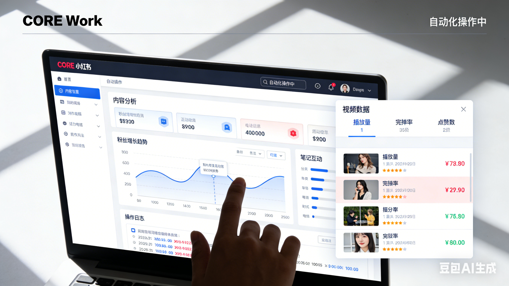

Anthropic 今日凌晨突发重磅更新，在 Cloud 桌面版正式上线全新功能 CORE Work。经过一早上的深度实测，最大的感受的是：CORE Work 重新定义了“纯粹意义上的 AI 智能体”，它堪称消费级 AI Agent 的“分水岭”，其影响力绝不亚于 Anthropic 此前推出的 MCP 工具连接标准和 Agent Skills 功能。
如果只把它当作 Cloud 桌面版的一次小版本升级，那就彻底低估了它的价值。CORE Work 的核心理念，是让 Cloud 不再局限于“回答问题”，而是成为你的“专属同事/员工”——只需授予文件夹权限，它就能在你的电脑上全自动完成读文件、改文档、生成表格、整理资料等工作，甚至能像 Cloud Code 一样调用浏览器，实现真正的浏览器自动化。
这意味着，我们每天耗费大量时间的重复性办公任务——整理素材、制作表格、撰写周报、生成PPT、信息检索与汇总等，现在只需在 Cloud 桌面版中输入一句话，就能全自动完成。更关键的是，让 AI 直接在本地电脑执行自动化任务，目前 ChatGPT 桌面版及其他主流 AI 桌面应用，均未实现这一核心功能。
从 2024 年发布 MCP 标准化工具连接，到 2025 年推出 Agent Skills 拓展能力，再到 2026 年初重磅发布 CORE Work，Anthropic 正在一步步重新定义 AI Agent 的边界。本期将通过 3 个不同难度的实测场景，带大家全面了解 Cloud CORE Work 的实力，看看它究竟能为我们的办公效率带来多大变革。
一、前期准备：如何开启 Cloud CORE Work？
使用 CORE Work 非常简单，只需 3 步即可快速上手，全程无复杂配置，真正实现“开箱即用”：
- 确保已下载并安装 最新版 Cloud 桌面应用（旧版本无 CORE Work 入口）；
- 打开 Cloud 桌面版，在左侧导航栏中找到「CORE Work」选项，点击进入；
- 点击「New Task」创建新任务，即可看到 CORE Work 支持的核心功能：创建文件、整理数据、制作原型、整理文件、规划每日任务、发送信息等。
关键设置：权限与连接器配置
- 文件夹权限：在任务界面中，可选择让 CORE Work 操作的本地文件夹（如桌面、文档文件夹），只需勾选对应路径，即可授予读取/修改权限；
- 文件/图像添加：点击界面中的「+」号，可直接添加本地文件或图像，方便 CORE Work 快速获取素材；
- 连接器配置：点击「Connectors」，可连接 Chrome 浏览器、GitHub 等平台，点击「Manage Connectors」还能自定义连接其他服务，为后续浏览器自动化、跨平台操作奠定基础。
二、实测场景1：本地文件自动化（基础难度）
测试任务：查找桌面上体积较大的文件，整理成 Excel 表格（包含文件名、文件体积、文件类型、存储路径）并保存到桌面；筛选出体积超过 1GB 的文件，确认后删除，释放磁盘空间。
实测过程与结果：
- 在任务输入框中输入指令：「查找桌面上体积很大的文件，整理到 Excel 表格里，将表格输出到桌面」，点击发送；
- CORE Work 自动触发操作：先读取相关技能文档，再扫描指定文件夹（桌面），快速识别所有文件并筛选出大文件；
- 自动创建 Excel 表格，同步填充文件详情，生成任务进度条（扫描文件→创建表格→保存表格），全程无需手动干预；
- 任务完成后，界面会提示表格保存路径，点击即可直接打开表格——表格中不仅详细列出了所有大文件的信息，还额外添加了“文件体积统计”，显示所有大文件合计占用 24.1GB；
- 继续输入指令：「帮我删除体积超过 1GB 的大文件」，CORE Work 会先列出所有符合条件的文件，提示用户确认；
- 点击「确认删除」后，CORE Work 自动执行删除操作，完成后提示“成功删除 7 个超过 1GB 的文件，共释放 22.4GB 磁盘空间”，并列出已删除文件的详细清单。
实测亮点：
- 全程自动化，无需手动筛选、创建表格、删除文件，指令下达后即可等待结果；
- 操作逻辑严谨，删除文件前主动提示确认，避免误删，细节拉满；
- 表格整理规范，额外添加统计信息，比手动整理更高效、更精准。
三、实测场景2：浏览器自动化+数据分析（中等难度）
测试任务：打开小红书后台，分析最近发布的 10 条视频作品的播放量、点赞量、收藏量等数据，筛选出 3 条爆款视频，分析其爆款原因，将所有数据和分析结果整理成 Excel 表格，保存到本地。
实测过程与结果：
- 输入任务指令：「打开小红书后台，分析我最近发布的 10 条视频作品的播放量、点赞量、收藏等信息，筛选三条爆款视频，分析视频为什么会火，然后整理并存储到表格里，放入本地」，点击发送；
- CORE Work 自动调用 Chrome 浏览器，弹出权限授权提示，授权后自动打开小红书后台登录页面（已登录状态下直接进入）；
- 全程自主操作浏览器：点击左侧「内容分析」菜单，进入作品数据页面，自动提取 10 条视频的完整数据（曝光量、观看量、封面点击率、评论数、收藏数、涨粉数、人均观看时长等）；
- 自动筛选爆款视频（根据观看量、点赞率等核心指标判定），深度分析每条爆款视频的起火原因（如封面标题吸引力、内容实用性、话题热度等）；
- 自动创建 Excel 表格，分为 3 个工作表：「10 条视频完整数据」「爆款视频深度分析」「爆款规律总结」，同步保存到本地；
- 任务完成后，点击表格链接即可打开查看，所有数据准确无误，爆款分析逻辑清晰，甚至总结出可复用的爆款策略（标题策略、内容策略、话题选择技巧）。
实测亮点：
- 真正实现浏览器全自动操作，无需手动点击、切换页面、复制数据，完全模拟人类操作逻辑；
- 数据分析能力强大，不仅能提取数据，还能进行深度拆解和规律总结，远超普通 AI 的“数据搬运”；
- 跨场景联动流畅，从浏览器数据提取到本地表格生成，全程无中断、无报错，体验丝滑。
四、实测场景3：跨平台联动+深度报告生成（高难度）
测试任务：打开 Gemini，搜索特斯拉近 7 日股价信息，提取开盘价、收盘价、最高价、最低价、涨跌幅等核心数据，分析特斯拉股价走势及影响因素，判断该股票是否值得入手，撰写一篇深度分析报告，保存为 Word 文档。
实测过程与结果：
- 输入任务指令：「打开 Gemini，搜索特斯拉近 7 日股价信息，分析这个股票是否值得入手，并写一篇深度分析报告，存入 Word 文档」，点击发送；
- CORE Work 自动调用 Chrome 浏览器，打开 Gemini 页面，自动在输入框中输入搜索指令（「特斯拉近 7 日股价信息，包含开盘价、收盘价、最高价、最低价、涨跌幅」），点击发送；
- 实时读取 Gemini 返回的股价数据，自动滚动页面获取完整信息，提取核心数据并整理；
- 结合股价数据，深度分析影响特斯拉股价的重大市场因素（如行业动态、竞品动作、宏观经济等，实测中提到“英伟达宣布进军自动驾驶领域”对特斯拉股价的冲击）；
- 从技术面、基本面两个维度分析特斯拉股票的投资价值，给出短期、中长期投资建议及风险提示，撰写完整的深度分析报告；
- 自动创建 Word 文档，规范排版（包含执行摘要、股价数据、走势分析、影响因素、投资建议、结论等模块），保存到本地，点击即可打开查看。
实测亮点：
- 跨平台联动无缝衔接，从浏览器打开、Gemini 搜索，到数据提取、报告撰写，全程自动化，无需人工干预；
- 报告撰写逻辑严谨、内容专业，不仅有数据支撑，还有深度分析和可落地的投资建议，堪比专业分析师的产出；
- 操作速度远超人工，完成整个任务仅用 10 分钟左右，而人工完成至少需要 1-2 小时。
五、核心优势：CORE Work 到底强在哪里？
经过 3 个场景的实测，Cloud CORE Work 的核心优势已经非常明显，对比 ChatGPT 桌面版及其他 AI 工具，它的差异化优势主要体现在 3 点：
1. 真正的“本地自动化”，打破 AI 与本地设备的壁垒
目前绝大多数 AI 桌面版（包括 ChatGPT 桌面版），仅能实现“对话问答”或“简单文件生成”，无法直接操作本地文件、修改文件夹内容；而 CORE Work 可直接获取本地文件夹权限，实现读文件、改文件、删文件、创文件的全流程自动化，真正打通了 AI 与本地设备的连接。
2. 浏览器自动化更智能，完全模拟人类操作
不同于普通 AI 工具的“链接跳转”，CORE Work 能真正操控浏览器，实现点击、输入、滚动、切换页面等一系列人类操作，无需手动干预，可适配小红书、Gemini、GitHub 等各类网页平台，适配性极强。
3. 从“工具”到“员工”，实现全流程任务闭环
CORE Work 不再是“被动响应指令”的工具，而是能“主动规划、主动执行、主动反馈”的智能体——接到复杂任务后，会自动拆解成多个子任务（如“打开浏览器→搜索数据→提取数据→生成报告”），全程自主执行，直到完成最终目标，真正实现“一句话指令，全流程搞定”。
六、总结与展望：AI Agent 时代，效率革命已来
Cloud CORE Work 的发布，无疑是消费级 AI Agent 领域的一次里程碑事件。它的出现，彻底打破了“AI 只能辅助办公”的局限，将 AI 从“对话工具”升级为“能独当一面的员工”，让我们从繁琐的重复性办公任务中彻底解放出来。
对比来看，ChatGPT 桌面版虽然发布更早，但始终没有推出核心的本地自动化、浏览器自动化功能，逐渐被 Anthropic 拉开差距；而 Cloud CORE Work 刚一上线，就展现出极强的实用性和流畅度，后续经过几次迭代优化，其能力大概率会超出我们的预期。
可以预见，在 Cloud CORE Work 的带动下，各大 AI 厂商（包括 OpenAI）都会迅速跟进，推出类似的 AI Agent 功能，消费级 AI Agent 市场将进入“全面内卷”时代。而对于我们普通用户而言，这无疑是一件好事——未来，越来越多的办公任务将被 AI 全自动完成，我们可以将更多时间和精力投入到更具创造性、更有价值的工作中。
最后，想问大家一个问题：你平时最头疼的重复性办公任务是什么？你觉得 Cloud CORE Work 能帮你解决吗？欢迎在评论区留言探讨，一起期待 AI 为我们的工作和生活带来更多变革。